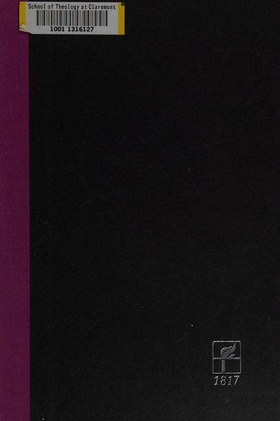

Library › Self-Improvement
Freedom from the Known — Summary & Key Lessons

Think for yourself — Krishnamurti's radical call to break free from authority, fear and the past.
📖 OPEN THE FULL INTERACTIVE BREAKDOWN →🌐 Read it in Hindi, Hinglish, Gujarati, Tamil & 22 more languages — free, with audio.
💡 The Big Idea
Krishnamurti dismantles every crutch we lean on — authority, tradition, belief, comparison — and asks us to look at ourselves directly, without the interpreter of the past. The mind that is free is not the one that follows a method but the one that observes its own conditioning with full attention. Change is not a future project; it is the quality of awareness right now.
🧠 The 6 Key Lessons
Lesson 1: Observation Without the Observer
Chapter 1: The Individual and Society
Krishnamurti's core teaching: when you observe your anger, greed or fear, you usually do so as a separate 'observer' who judges and tries to change it — and that split is itself an illusion that keeps the pattern alive. Real observation is without the observer: seeing the feeling fully, without naming, condemning or escaping it. In that choiceless awareness, the feeling dissolves because nothing feeds it.
📖 Example: When anger arises and you label it 'bad, I must control it', you create a battle between two parts of yourself — and the anger, being attended to with resistance, grows. Watch the anger without naming or judging, with total attention, and you will see it… Read the full example →
⚡ Do this: This week, when a strong emotion arises, spend one minute watching it without naming, judging or explaining it — just be aware of the sensation itself.
Lesson 2: The Known Is the Prison of the Mind
Chapter 2: What Is Freedom?
We approach every new experience through the filter of memory — comparing, categorizing, recognizing — which means we never actually meet anything new. Krishnamurti calls this living in the known: the past endlessly replaying itself in the present. Freedom is not the accumulation of more knowledge but the capacity to meet what is, without the interference of what was.
📖 Example: You meet a person and instantly the mind says 'he reminds me of so-and-so' — and from that moment you are relating to a memory, not to the person. The same mechanism distorts every book, sunset and conversation. Meeting life without the filter is the… Read the full example →
⚡ Do this: In one conversation this week, try listening without any memory-based reaction — no comparing, no 'I already know this' — and notice what you actually hear.
Lesson 3: Fear Lives in Thought, Not in the Fact
Chapter 3: Fear
Krishnamurti's dissection of fear: fear is never about what is happening — it is always about what might happen, a projection of thought into the future. The danger itself is manageable; the thought that rehearses it endlessly is what paralyzes. Observe fear as thought and it loses its grip, because thought cannot sustain itself without your attention feeding it.
📖 Example: The fear of losing a job is not the loss itself but the imagined future — bills, shame, uncertainty — that thought builds and then reacts to. The person who watches that mental movie as a movie, without identifying with it, finds the fear shrinks to its… Read the full example →
⚡ Do this: Next time fear arises, write down exactly what you're afraid of and notice how much of it is imagined future versus present fact.
Lesson 4: Authority Is the Death of Understanding
Chapter 4: Authority
Krishnamurti's most radical break: he dissolved his own followers' worship of him, insisting that all authority — gurus, leaders, experts, tradition — substitutes someone else's understanding for your own. The follower never understands; he merely obeys. Understanding requires the courage to stand alone in your own observation, even when the crowd has a comfortable answer ready.
📖 Example: At the height of his fame, Krishnamurti publicly dissolved the Order of the Star, the organization built around him, telling thousands of followers that truth is a pathless land and no one can lead them there. The act cost him followers but proved his point:… Read the full example →
⚡ Do this: Identify one belief you hold on authority — a guru, expert, trend or parent — and examine this week whether you'd hold it if no one else did.
Lesson 5: Comparison Is a Thief of Clarity
Chapter 5: Comparison
The mind constantly measures: better than, worse than, should be like. Comparison divides attention and creates envy, imitation and self-violence — you can never simply be what you are because you're always busy becoming something else. Krishnamurti's alternative: attention without measurement. The flower does not compare itself to the neighbor's flower; it simply blooms.
📖 Example: A student who compares himself to the topper studies from envy rather than curiosity, and the envy taints the learning. A musician comparing herself to a star performs from fear instead of love. Stop the measuring and the activity itself — studying, playing,… Read the full example →
⚡ Do this: For one day, drop all comparisons — with colleagues, strangers, your past self — and notice how the quality of your attention changes.
Lesson 6: Meditation Is Attention, Not a Technique
Chapter 6: Meditation
Krishnamurti rejects meditation as a practice to gain something — peace, power, enlightenment — because seeking turns it into a transaction of the ego. True meditation is choiceless attention: the state of being fully aware of whatever is, without wanting to change it. That attention, sustained, reveals the nature of the mind itself.
📖 Example: Sitting to 'achieve peace' is self-defeating, because the achiever remains — and the achiever is the source of disturbance. But watching your own thoughts as they arise, with no goal, opens a stillness that techniques cannot manufacture. The walk, the meal,… Read the full example →
⚡ Do this: Try one period of 'no-goal attention' daily — watching thoughts, sounds and sensations without trying to change anything — for five minutes.
✅ 5-Step Action Plan
- Practice observing emotions without naming or judging them, one minute at a time
- Hold one conversation this week with zero memory-based reactions
- Write your biggest fear and separate imagined future from present fact
- Examine one belief you hold purely on authority
- Drop all comparisons for one day and notice the difference
⚠️ When This Doesn't Work
⚠️ When this doesn't work: Krishnamurti's path assumes a stable mind and a supportive environment — for someone in acute crisis, depression or trauma, 'just observe your thoughts' can deepen suffering without professional help. Radical self-inquiry is a supplement to, not a replacement for, clinical care when needed.
💀 The Graveyard Proves It
🕉️ Rajneeshpuram — The Spiritual Utopia That Became a Surveillance State. Burn: A commune of thousands, 751 poisonings, and the guru's movement exiled from America. Read the full case study →
💬 Best Quotes from Freedom from the Known
- “The first step is the last step. The first step is to perceive the falseness of what you are doing.”
- “Freedom from the desire for an answer is essential to the understanding of a problem.”
- “It is no measure of health to be well adjusted to a profoundly sick society.”
Interactive version: mark lessons as read, listen in your language, share quote cards.